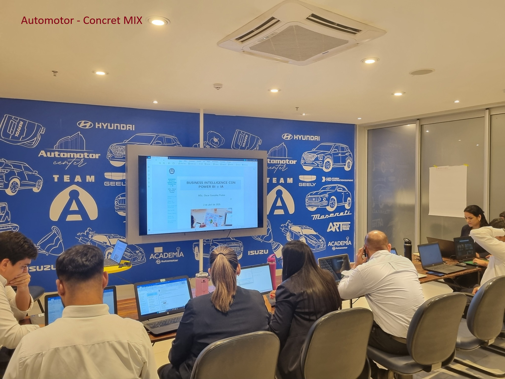
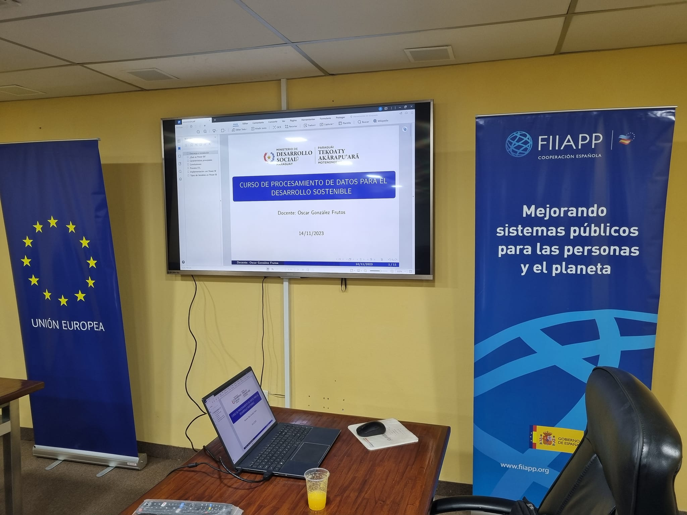
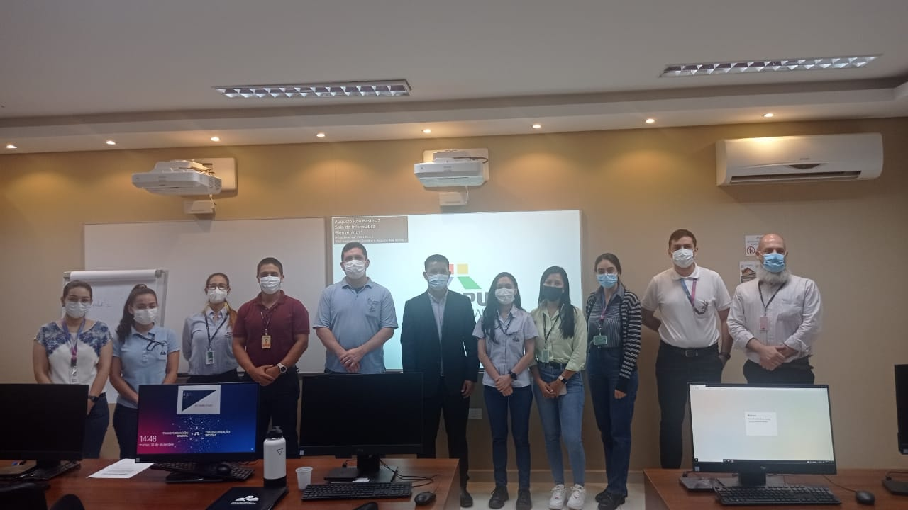
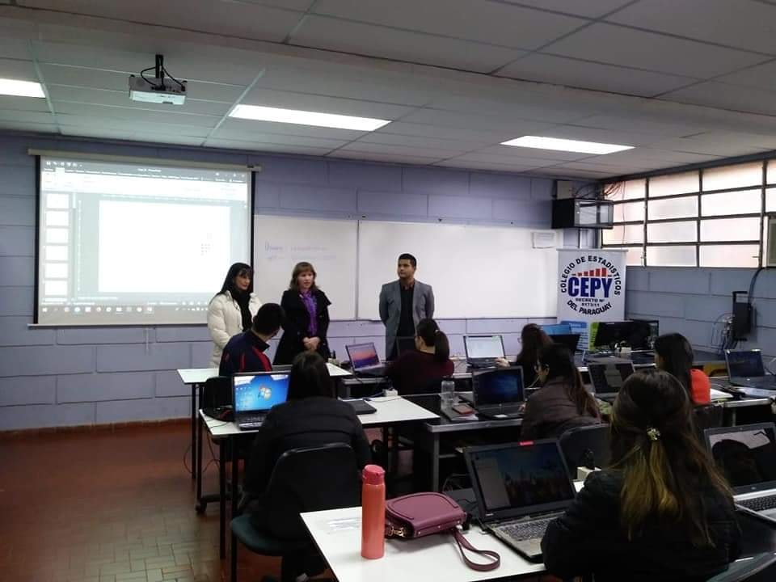

📊 Capacitación empresarial a medida: online, in-company o híbrida.
Ofrecemos programas de formación diseñados para equipos que buscan potenciar sus capacidades en Análisis de Datos e Inteligencia de Negocios mediante el uso de herramientas líderes del mercado: R, Python, Power BI, SQL y Excel. Las capacitaciones pueden realizarse 100% online o in-company, adaptadas a las necesidades de tu organización.
- 📌 Programas personalizados según el sector y los datos reales de tu empresa.
- 🧠 Formación práctica enfocada en análisis de datos, automatización de reportes y dashboards.
- 🎯 Modalidad online en vivo o presencial en tu oficina (in-company).
- 📁 Material de clase, datasets y grabaciones disponibles para los participantes.
- ✅ Ideal para equipos de análisis, finanzas, marketing, RRHH, operaciones y más.
👨🏫 Capacitador

Docente: Oscar González Frutos
Lic. en: Matemática Estadística – FACEN-UNA.
MSc. en: Estadística Aplicada – Universidad de Granada, España (Becal).
Experiencia: Más de 10 años en Análisis de Datos y docencia en SQL, Excel, Power BI, R y Python.
Certificaciones: Certificate in Data Science con R – HarvardX (Harvard University, en línea).
Pasión por enseñar: Comprometido en ayudarte a dominar habilidades clave y aplicarlas en proyectos reales.
Experiencia docente: Ha impartido capacitaciones en el BCP, Itaipú Binacional, DGEEC, MEC, FACEN-UNA y el Ministerio de Desarrollo Social; y en el sector privado: Automotor, Banco Familiar, Bancoop y Sueñolar.
🌐 Web personal · 🔗 LinkedIn
📸 Galería de Capacitaciones






📩 Consultar Presupuesto
¿Te interesa capacitar a tu equipo? Solicitá una propuesta personalizada y sin compromiso.
💬 Consultar vía WhatsAppTambién podés escribirnos a cicap2021@gmail.com